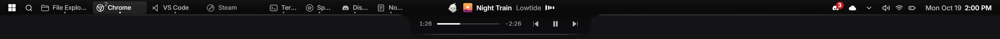
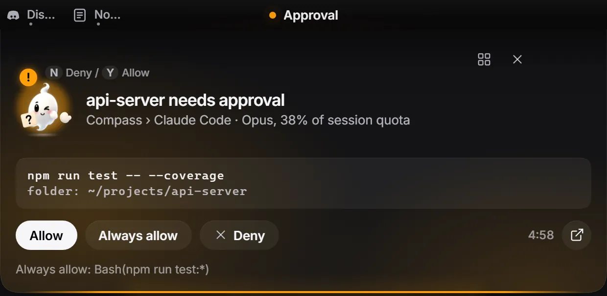
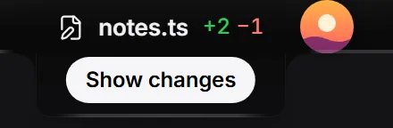
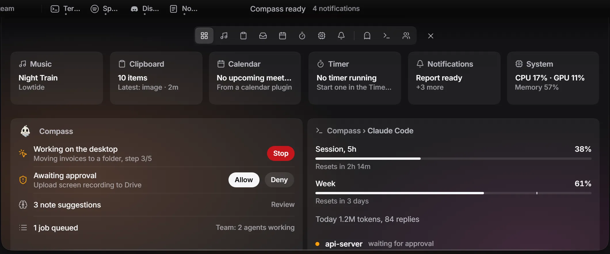
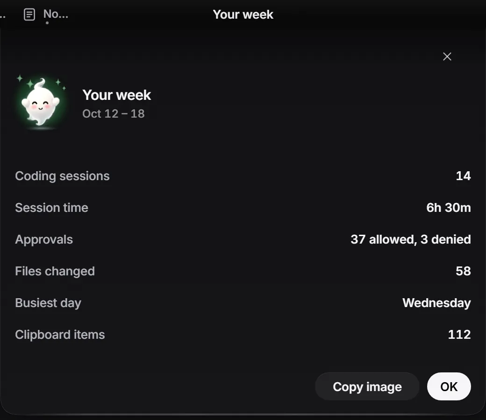

A Dynamic Island for Windows.
Peeka replaces the taskbar with a 30-pixel strip at the top of the screen. Songs, timers and Claude Code requests open out of its middle.


The strip at rest, at actual size: 30 pixels, plus the island when it has something to show.
The middle of the strip opens when something needs you.
Claude Code works, the song waits.
While a session thinks, the island shows how long it has been at it. The song you were playing moves to the small round bubble beside it, one click away.
Approve without switching windows.
When Claude Code asks for permission, the card shows the exact command and folder. Allow, Always allow or Deny, or press Y or N. One button in Settings connects Claude Code, another removes exactly those entries.

See what just changed.
After an edit, the strip names the file and counts the lines added and removed. Show changes opens the diff.


A clipboard history that keeps passwords blurred.
Text, images, files and links from the last 24 hours, kept on this PC only. Password-like items, like the Bitwarden row here, stay blurred until you hover. They never go to plugins and sit in a vault encrypted with Windows DPAPI.
And the rest of the taskbar’s job.


- Quick settings
- Volume, brightness, Wi-Fi, Bluetooth and Do not disturb drop down from the right end of the strip. Changes show up as short island events.
- The strip
- Running apps, tray, Start and search, system status. Clicking it never steals focus, and hovering an app shows a live window preview.
- Notifications
- An optional mirror of Windows notifications. One-time codes copy with one click.
- Timer
- A countdown that lives in the island.
- Downloads
- A finished-download notice with names and sizes only. Files are never opened.
- Setup wizard
- Three steps on first launch: taskbar, notification mirror, Windows banners. Run it again any time.
There is also a small ghost.
It hangs under the island and reacts to what the island is doing. It hums along to music, thinks while Claude Code works, waves when something needs approval and gets sleepy late at night. Once a week it brings a short recap of the week before.
- Resting
- Music
- Thinking
- Needs you
- Done
- Asleep

Nothing leaves your PC.
Peeka runs locally. Its own code makes no outbound network requests: no update check, no analytics, no telemetry. This page has none either.
- Passwords stay blurred.
- Password rows in the clipboard stay blurred until you hover or focus them, and the real text is not in the page until then.
- Lock and presentation modes.
- While locked, or while Windows is presenting, the strip and bubble show generic labels instead of content, and nothing is sent to plugins.
- One-time codes clean up.
- A code copied from a notification is cleared from the clipboard after 60 seconds, unless you copied something else since.
- Mic and camera indicator.
- A dot shows which apps are using the microphone or camera, read from Windows’ own consent store.
- Local listeners only.
- A per-user named pipe for plugins, and an optional alert API on 127.0.0.1 that is off by default and needs a per-install key.
- Your data stays in your profile.
- Settings, the clipboard vault and plugin tokens live in your local app data folder.
Plugins may use their own internet connection. Peeka cannot control that, and the approval window says so.
Add your own cards.
Plugins speak JSON-RPC 2.0 over a named pipe only your user can open. They send data and Peeka draws it: no HTML, CSS or scripts from plugins, permissions you approve scope by scope, and you can disconnect a plugin at any time.
// 1. Ask for a scope. Peeka shows its own approval window.
{"jsonrpc":"2.0","id":1,"method":"hello","params":{
"id":"com.example.focus","name":"Focus","publisher":"Example",
"version":"1.0.0","api":1,"scopes":["island.protrusion"],
"why":{"island.protrusion":"Show the focus timer in the island"}}}
// 2. Send data. Peeka draws the row and counts the timer.
{"jsonrpc":"2.0","id":2,"method":"island.protrusion.set","params":{
"title":"Deep work","icon":"timer","state":"info",
"timer":{"started_at":"2026-10-18T09:00:00Z"}}}Questions.
Windows SmartScreen warns me. Is that expected?
Yes. The exe is not code-signed yet, so SmartScreen may say “Windows protected your PC”. Choose More info, then Run anyway. If you would rather not, you can build it from source.
Which Windows versions does it run on?
Windows 10 and 11. Peeka needs the WebView2 runtime, which is already part of Windows 11. Download the installer, or the portable exe if you prefer not to install anything.
How do I uninstall it?
If you connected Claude Code, press Remove in Settings first. Choose Restore taskbar (in the Start panel), quit Peeka, then uninstall it from Windows Settings, Apps (installer) or delete peeka.exe (portable). Settings, the clipboard vault and plugin tokens live in %LOCALAPPDATA%\notch; delete that folder too.
Is it really free?
Yes. The source code is MIT licensed. The ghost mascot is the one exception: its artwork is © isDionn and not covered by MIT, so forks bring their own mascot. See the mascot license.
What language is the interface?
English.
Is there a video?
A 33-second promo, recorded on an earlier build, so some of its labels are in Turkish.